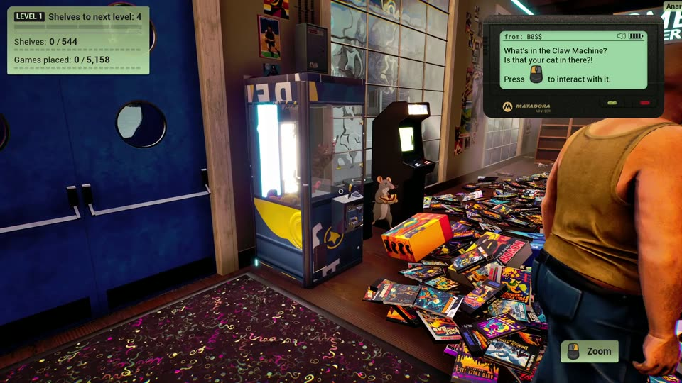
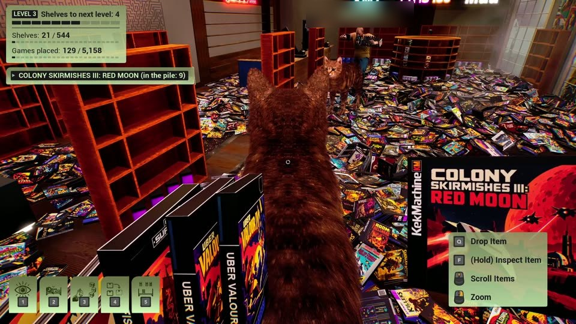
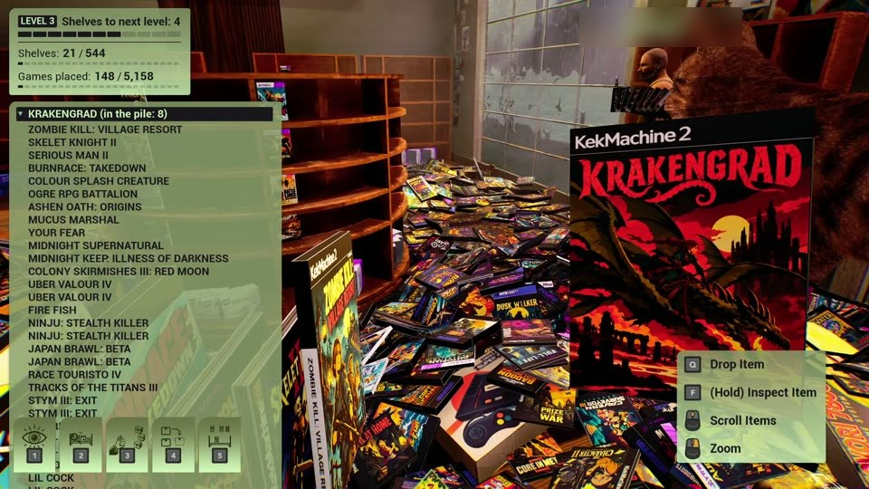
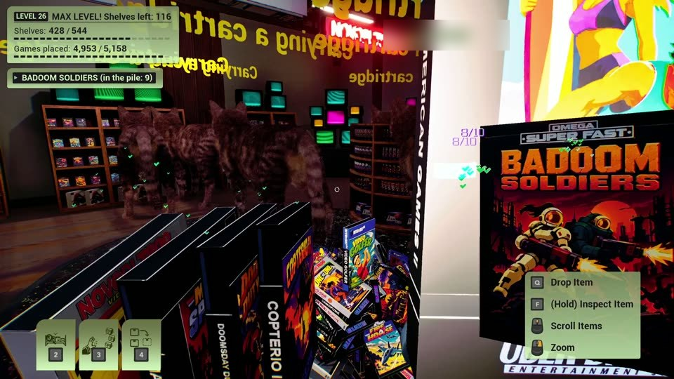
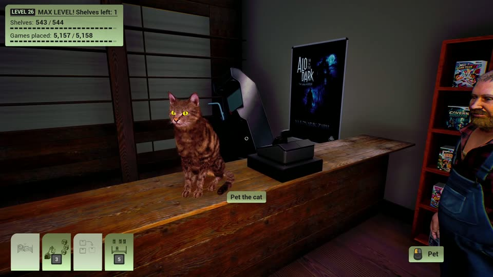

My Cat Scattered Games review: a calm tidying game, then my giant cat mod

My Cat Scattered Games is a tidy-up organizing game from ODIUS, published by Loopr Partners and out on Steam since November 11, 2026. Your cat has knocked 5,158 games and consoles off the shelves of a video game store. You put each one back in the right section, unlock abilities by filling shelves correctly, and open a safe in each of the three areas to get the code that frees the cat from the claw machine. No timers, no game over. You can play solo or with up to 3 friends. I played on launch day with one other player.
The real game starts with a floor buried in game boxes and a counter that reads 0 of 5,158 placed. It wants matching copies side by side on the shelves, which I was not into: "It wants us to put games that are the same next to each other, which I don't really feel like doing." The parody covers are the game's own, and they are its best jokes, like Maggots 3D and Fogged Hills. "Some of these could be real games."

Then I turned on my own mod, ChaosCat. It gave me infinite pockets, held my ability points at 99 and added horse-sized cats. Some I could ride: "There we have, we have cat steeds." Others walked in as customers, asked for a game and knocked games off the shelves if I was too slow. One wanted a Y-box game. We didn't have any.

Infinite pockets broke it. I ended up carrying about 36,000 games, the frame rate dropped to about four a second, and then it crashed with a fatal error. That was my mod's giant stack, not the game.

So I made the cats do the work. My mod added cat sorters that carry games to the shelves, and soon I had an army of them. "Go my beautiful kitties." After that, my mod's slide got me out of the store, where the city skyline turns out to be a backdrop around a flat empty plain. "It's an illusion there is no city."

With the cats sorting, we got to 5,157 of 5,158 placed and max level, opened all three safes and let the cat out. The customers, the cat sorters and the cat steeds are all my mod. The only cat in the real game is the one in the claw machine. Unmodded, it's a chill sorting game carried by its dumb parody covers, good for a lazy co-op night. I broke it on purpose. Store page: MY CAT SCATTERED GAMES: Tidy Videogame Supermarket on Steam
More games I broke with mods: the Find the Box hamster flood, Don't Mess With Bober and the CRACK speedrun.